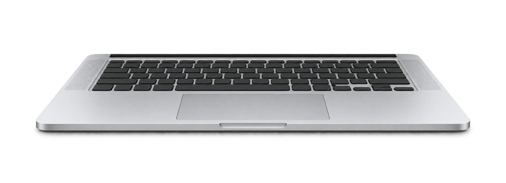

A softer side
of your Mac.
Your desktop gently blurs as you close the lid.
A small detail that feels right at home.
Free & open source macOS 14+ Apple silicon MacBooks

The actual BendMac effect. Scroll down to fold. Scroll up to open. Watch the full demo.
FEELS LIKE IT BELONGS
Less motion.
More feeling.
A soft blur gathers at the top of your desktop. A subtle bend follows your lid. Open it again, and everything settles back into place.
In sync with your lid.
Uses your MacBook’s lid-angle sensor to follow every movement. No keyboard shortcut to start the effect.
Quietly in your menu bar.
Adjust the blur, perspective, and shadow to your taste. Pause any time with Escape.
Your desktop stays yours.
Built with native Mac frameworks. Screen frames stay in memory on your Mac, without audio capture, saved recordings, or uploads.
FREE TO USE. YOURS TO BUILD ON.
Made to be shared.
BendMac is open source under the MIT license.
Read the code, make it your own, or help shape what comes next.
Found a bug? Have a better idea for the animation?
Open an issue or send a pull request. Contributions are welcome.
A small idea.
Made real.
I’m a student, and BendMac is a fun project I’ve been working on recently. I liked the idea of giving the Mac a playful little detail, so I started building this and sharing it.
Seeing people actually use it means a lot to me. Whether you try it, share it with a friend, report a bug, or contribute some code, thank you. I’m grateful you’re here.
BendMac is completely free. If you’d like to support me, you can buy me a coffee. It’s entirely optional, and there’s nothing to unlock. Just enjoying the app is more than enough.
Buy me a coffee (opens in a new tab) Optional support. Always a free app.A few things to know.
Will it work on my Mac?
BendMac needs macOS 14 Sonoma or later and an Apple silicon MacBook with a lid-angle sensor. The effect has been tested on an M5 MacBook Air. Automatic lid tracking is currently unsupported on the 2020 M1 MacBook Air and M1/M2 13-inch MacBook Pro with Touch Bar. Other Apple silicon MacBooks need a readable lid-angle sensor; the chip alone does not guarantee compatibility. The manual preview works without a sensor. External displays stay unchanged.
How do I get started?
Download and open the DMG, then drag BendMac onto the Applications folder. Open General and enable the desktop effect. Grant Screen Recording permission when macOS asks. The app appears in your menu bar.
This early release is not Developer ID signed or notarized. You can inspect the source and build it in Xcode yourself. If you use the download, macOS may require you to approve it in Privacy & Security.
Why does it need Screen Recording?
The effect uses a live image of your desktop so your wallpaper and windows blur together. Despite the permission’s name, BendMac does not save a recording. It does not capture audio or send screen content anywhere.
Can I change the effect?
Yes. Choose Silk, Shade, or Frost, then adjust perspective, blur, and shadow. Set the lid angle at which your desktop becomes clear. You can also try the animation with a slider in the app.
Inspired by Bendy .
Bendy brought the folding-screen idea to the Mac. BendMac is an independent, free implementation that builds on that inspiration. Thanks for the spark.